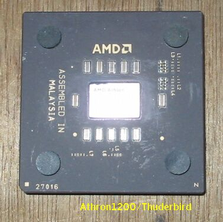

DDRメモリー
このボードは、DDRSDRAMを要求します。手持ちにDDRメモリーはなかったので、棚上げにしていましたが、
最近になって、購入できたので、近いうちに、我が家の最高速CPU、Athron1200を動かしてみようと思っています。
(2002/09/28記)
壊れてしまったAthron1200/Thunderbird

コア欠けのAthronを安く買ってきて使っていたが、ヒートシンクを交換するときに壊れてしまった。
今は、Duron700で運用している。
(2003/06/13記)
古いAT互換機関係のページに戻る